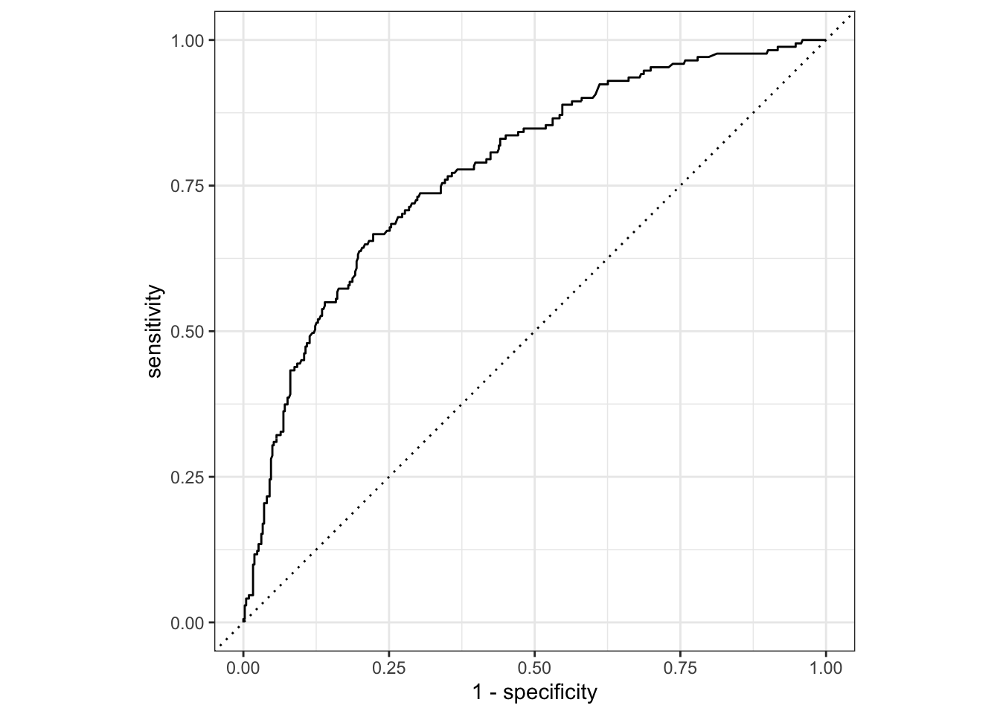

data_path <- paste0("/Users/MarcChoisy/Library/CloudStorage/",
"OneDrive-OxfordUniversityClinicalResearchUnit/",
"GitHub/choisy/typhoid/")Clinical score design
Parameters
The path to the data folder:
Packages
The required packages:
required_packages <- c("dplyr", "purrr", "rsample", "yardstick", "recipes", "themis",
"parsnip", "workflows", "tune", "dials", "finetune")Making sure that the required packages are installed:
to_ins <- required_packages[! required_packages %in% installed.packages()[, "Package"]]
if (length(to_ins)) install.packages(to_ins)
rm(required_packages, to_ins)Loading some of these packages:
library(dplyr)
library(purrr)
library(rsample)
library(yardstick)
library(recipes)
library(themis)
library(parsnip)
library(workflows)
library(tune)
library(dials)
library(finetune)Utilitary functions
file_exists <- function(x) file.exists(paste0(data_path, "cache/", x))
readRDS2 <- function(x) readRDS(paste0(data_path, "cache/", x))
saveRDS2 <- function(object, file) saveRDS(object, paste0(data_path, "cache/", file))vfold_cv_constructor <- function(f) function(x, index = NULL, ...) {
if (is.null(index)) return(map(x$splits, f, ...))
if (length(index) == 1) return(f(x$splits[[index]], ...))
map(x$splits[index], f, ...)
}
analysis2 <- vfold_cv_constructor(analysis)
assessment2 <- vfold_cv_constructor(assessment)mclapply2 <- function(..., nb_cores = NULL) {
if (is.null(nb_cores)) nb_cores <- parallel::detectCores() - 1
parallel::mclapply(..., mc.cores = nb_cores)
}seq_along2 <- function(x) setNames(seq_along(x), names(x))map_named <- function(x, f, ...) map(setNames(x, x), f, ...)Reading the clean data
The data sets:
cambodia_bangladesh <- readRDS(paste0(data_path, "clean_data/cambodia_bangladesh.rds"))
nepal <- readRDS(paste0(data_path, "clean_data/nepal.rds"))Preprocessing the Cambodia and Bangladesh data
cambodia_bangladesh2 <- cambodia_bangladesh |>
select(-country) |>
na.exclude()
nepal2 <- nepal |>
select(-starts_with("score")) |>
na.exclude()
combined_data <- bind_rows(cambodia_bangladesh2, nepal2)
ind <- list(analysis = seq(nrow(cambodia_bangladesh2)),
assessment = nrow(cambodia_bangladesh2) + seq(nrow(nepal2)))
splits <- make_splits(ind, combined_data)
training_data <- training(splits)
testing_data <- testing(splits)
rm(cambodia_bangladesh2, nepal2)Recipes
A step that we could potentially add is
recipe0 <- recipe(culture ~ ., training_data) |>
step_bin2factor(where(is.logical))
recipe0_dummy <- recipe0 |>
step_dummy(all_nominal_predictors())
recipe0_smote <- recipe0 |>
step_smotenc(culture)
recipe0_dummy_smote <- recipe0_dummy |>
step_smotenc(culture)
recipes_names <- ls(pattern = "recipe0")
recipes <- map_named(recipes_names, get)
rm(recipes_names)Note that SMOTE is rightly applied only to the training data (i.e. the one used to define the recipe, here cambodia_bangladesh).
Resampling of the training data
training_data |>
group_by(culture) |>
tally()# A tibble: 2 × 2
culture n
<lgl> <int>
1 FALSE 512
2 TRUE 33set.seed(456)
cv_folds <- vfold_cv(training_data, strata = culture)Random forest models
Non-tuned model
rf_default <- rand_forest("classification", "randomForest")rf_default_workflows <- map(recipes, workflow, rf_default)14”:
set.seed(946)
rf_default_fitted_res <- map(rf_default_workflows, fit_resamples, cv_folds)map(rf_default_fitted_res, collect_metrics)$recipe0
# A tibble: 3 × 6
.metric .estimator mean n std_err .config
<chr> <chr> <dbl> <int> <dbl> <chr>
1 accuracy binary 0.934 10 0.0122 Preprocessor1_Model1
2 brier_class binary 0.0401 10 0.00710 Preprocessor1_Model1
3 roc_auc binary 0.947 10 0.0120 Preprocessor1_Model1
$recipe0_dummy
# A tibble: 3 × 6
.metric .estimator mean n std_err .config
<chr> <chr> <dbl> <int> <dbl> <chr>
1 accuracy binary 0.939 10 0.0119 Preprocessor1_Model1
2 brier_class binary 0.0403 10 0.00716 Preprocessor1_Model1
3 roc_auc binary 0.941 10 0.0146 Preprocessor1_Model1
$recipe0_dummy_smote
# A tibble: 3 × 6
.metric .estimator mean n std_err .config
<chr> <chr> <dbl> <int> <dbl> <chr>
1 accuracy binary 0.932 10 0.0128 Preprocessor1_Model1
2 brier_class binary 0.0439 10 0.00736 Preprocessor1_Model1
3 roc_auc binary 0.945 10 0.0142 Preprocessor1_Model1
$recipe0_smote
# A tibble: 3 × 6
.metric .estimator mean n std_err .config
<chr> <chr> <dbl> <int> <dbl> <chr>
1 accuracy binary 0.938 10 0.0116 Preprocessor1_Model1
2 brier_class binary 0.0469 10 0.00729 Preprocessor1_Model1
3 roc_auc binary 0.945 10 0.0136 Preprocessor1_Model1Tuned model
The random forest classifier:
rf_to_tune <- rand_forest("classification", "randomForest",
mtry = tune(), # number of variables for each tree
trees = tune(), # number of trees
min_n = tune()) # minimum number of obs per noderf_to_tune_workflows <- map(recipes, workflow, rf_to_tune)Grid search
Space filling Latin hypercube grids:
SFGLH100 <- rf_to_tune |>
extract_parameter_set_dials() |>
update(mtry = mtry(c(1, ncol(bake(prep(recipe0), NULL)) - 1))) |>
grid_space_filling(size = 100, type = "latin_hypercube")
SFGLH100dummy <- rf_to_tune |>
extract_parameter_set_dials() |>
update(mtry = mtry(c(1, ncol(bake(prep(recipe0_dummy), NULL)) - 1))) |>
grid_space_filling(size = 100, type = "latin_hypercube")
SFGLH100grids <- list(SFGLH100, SFGLH100dummy) |>
rep(each = 2)A serial version looks like this (27’):
rf_tune_race_anova_sfglh100 <- map2(rf_to_tune_workflows, SFGLH100grids,
~ tune_race_anova(.x, cv_folds, grid = .y))Parallel version
mapping_race <- function(f) {
mclapply2(seq_along2(rf_to_tune_workflows),
function(x) f(rf_to_tune_workflows[[x]],
cv_folds,
grid = SFGLH100grids[[x]]))
}(11’29”):
rf_tune_race_anova_sfglh100 <- mapping_race(tune_race_anova)The win-loss race (8’12”):
rf_tune_race_win_loss_sfglh100 <- mapping_race(tune_race_win_loss)Select best model
show_best_metric <- function(x, metric = "roc_auc") {
x |>
collect_metrics() |>
filter(.metric == metric) |>
arrange(desc(mean)) |>
select(mtry, trees, min_n, mean) |>
head(1)
}all_resampled_fittings <- list(rf_tune_race_anova_sfglh100,
rf_tune_race_win_loss_sfglh100)
best_recipe <- all_resampled_fittings |>
unlist(FALSE) |>
map_dfr(show_best_metric, .id = "recipe") |>
arrange(desc(mean)) |>
head(1) |>
pull(recipe)
best_parameters <- all_resampled_fittings |>
map(~ .x[best_recipe]) |>
unlist(FALSE) |>
map(show_best_metric) |>
bind_rows() |>
arrange() |>
tail(1)
tuned_rf <- rf_to_tune_workflows[[best_recipe]] |>
finalize_workflow(best_parameters)
tuned_rf |>
fit_resamples(cv_folds) |>
collect_metrics()# A tibble: 3 × 6
.metric .estimator mean n std_err .config
<chr> <chr> <dbl> <int> <dbl> <chr>
1 accuracy binary 0.938 10 0.0116 Preprocessor1_Model1
2 brier_class binary 0.0457 10 0.00616 Preprocessor1_Model1
3 roc_auc binary 0.958 10 0.00927 Preprocessor1_Model1a <- last_fit(tuned_rf, splits)
collect_metrics(a)# A tibble: 3 × 4
.metric .estimator .estimate .config
<chr> <chr> <dbl> <chr>
1 accuracy binary 0.767 Preprocessor1_Model1
2 roc_auc binary 0.780 Preprocessor1_Model1
3 brier_class binary 0.165 Preprocessor1_Model1a |>
collect_predictions() |>
roc_curve(truth = culture, .pred_yes) |>
autoplot()